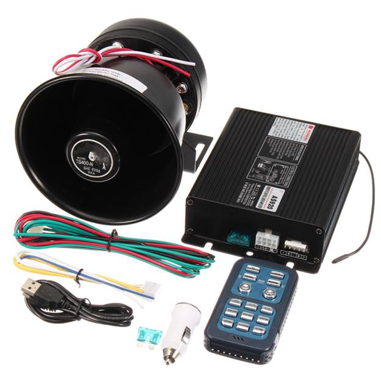

Using public address systems as part of a mass notification system is the only way in which a public address system can be used for fire alarm notification. A mass notification system provides emergency announcements and direction to occupants in many types of emergencies in addition to fire emergencies.
